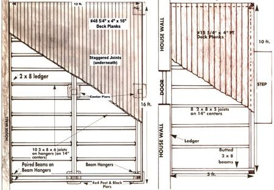
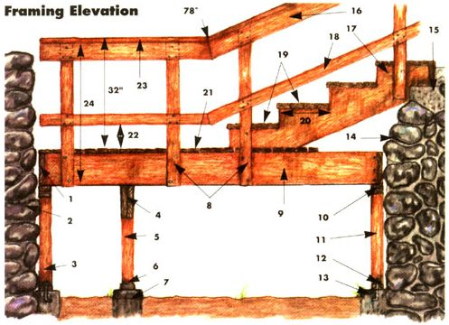
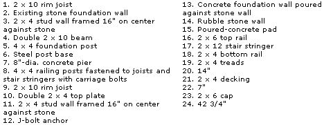
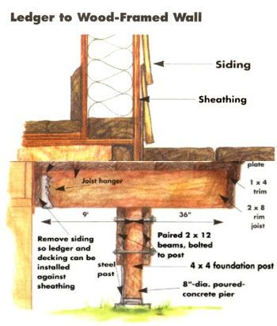
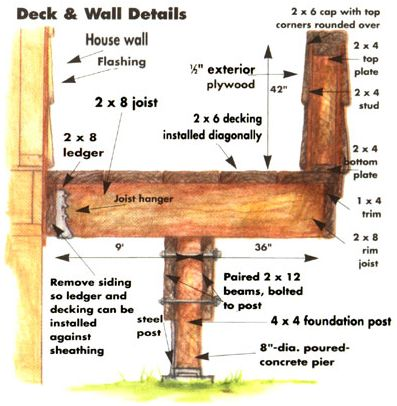
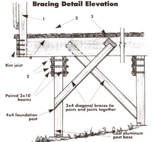
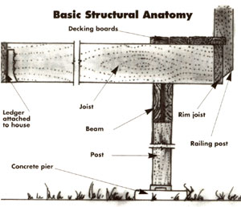
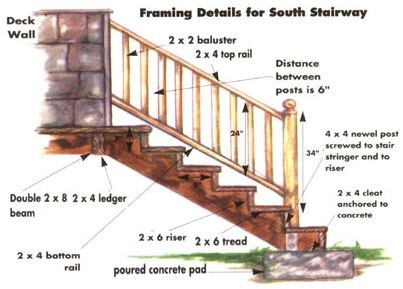

All Decked Out For Summer
Building a home deck, including site plan, trial layout, lumber, diagrams, instructions.
by John Vivian
June/July 1992
The best addition you can make to your country home and active indoor/outdoor lifestyle is a deck of warm and inviting wood-for family cookouts, parties, close supervision of kids and pets, or simply for someplace to sit back in the sun and watch the tomatoes ripen. And, it needn't be the sort of architect-designed, megabuck extravaganza you see in the slick magazines and "ideabooks." Designing a simple four-square deck and doing the elementary masonry and carpentry yourself, you can add 100 cents of every dollar you spend directly onto the market value of your home. Indeed, if you shop carefully, you may even be money ahead!
First, visit (don't phone) the local building inspector to see if you need a building permit and inspection(s). In most populated areas, you will. Built right, decks are permanent structures and, like it or not, society has legislated itself a say in the appearance and durability of structures that will outlive their builders. Communities determine setbacks (distance of buildings from property lines) and interpret regional building codes to specify size and spacing of structural members, depth and size of foundations, dimensions of stairs and railings and more.
Some inspection departments encourage owner/builders, and offer deck plans and tips for satisfying the code. Others are biased toward the building trades and may be sticklers for detail. All can force you to tear down a deck if it fails inspection. But, as a town assessor once advised: "If you don't need a permit, don't get one. Filing it will alert us and your property tax may go up." Even if a permit is not required, to build a deck that will hold up in your climate, learn code requirements and follow them.
The Site Plan
To obtain a permit, you'll need to submit a scale site plan and construction drawings. Draw them up even if you don't need to. Measure the distance of buildings from property lines. Using square-ruled graph paper, ink in a birds-eye-view scale outline of applicable setback lines, structures, drives, walks, and permanent plantings. Then make graph-paper cutouts of your deck ideas and try them on for size, location and effect on household traffic patterns. Decks serve best when connecting the family's most-used inside and outside activity areas-linking back or side yard with kitchen or family room. But try your ideas all around the house.
Decks are for expansive living. As one builder puts it: "Everyone needs ample 'buttspace."' So, be sure that your deck is large enough. Make a full-page scale plan of the deck, then mark a 3' arc access area at entries and stairs. Make paper cutouts of a 3'x4' rectangle for a barbecue grill in use; 4'x6' rectangles for occupied deck chairs; 4' diameter circles for standing people. See if, with furniture moved aside, you have a 6' wide track for your youngster and a pal on Hot Wheels. The deck may demand that the garden be moved or suggest a whole new landscaping plan. Take your time; paper's cheap.
Plan to spend $3.50 to $5.00 per square foot. In these tight-pursed times, bank financing may be a problem for a do-it-yourself deck. However, many building supply outlets will finance up to $1,500 worth of materials. Lumber and fittings for few home-builder-scale decks will cost more; a discount lumber yard near me sells lumber and fittings for a 6'x8' entry deck for $170, and a 16'x24' model (railings included) for $1,300.
A Trial Layout
Next, make a string-and-stick mockup. Set stout boards or poles at the corners and every few feet around the deck's outline, run taught cord around them, clear and roughlevel the land and try living in the space for a while. Be sure you have easy access from the house. An existing door may suffice, or you may need to cut a door in the kitchen or family room wall.
For a clear view of the deck, windows may need enlarging or relocating; a sliding glass door may solve both window and door problems.
Experiment with different deck sizes and shapes. The building code and common sense require that any deck much over a foot off the ground must have a railing and stairs; try different locations and sizes. Fronting the door from the house is most convenient, and an outdoor stair should be at least 4' wide. Perhaps a pair of stairways will be better.
Before drawing the construction plan, select the materials. The deck must support 10 lbs./sq.ft. of its own weight and a total "live" load (including people and furnishings) of 40 lbs./sq. ft. Different types of lumber have different carrying capacities.
Lumber
In time, boring insects and soil-borne molds will destroy any wood they can get to, and airborne mildew will gradually eat it to pulp. For longest life, lumber must be weather-resistant and kept out of contact with the soil.
Surprising perhaps, but your worst lumber choice would be hardwood such as maple, birch, or most oaks. Not much longer-lived are common building lumbers such as spruce, fir, or pine. Most elegant are straight-grained softwoods containing natural resins which repel bugs and molds. California redwood, eastern red or western white cedar, and southern bald cypress will last 25 years or longer with proper care. However, they're expensive. Inch-thick Western red cedar decking costs over a half-dollar a running foot (and is rising). You'll pay almost twice that for redwood. White cedar costs less, but is hard to come by-it is only really available primarily from fencing contractors.
From your woodlot or local sawmills, you may be able to obtain non-commercial species having a measure of natural rot-resistance: locust, mulberry, catalpa, and, in the Midwest, Osage orange. Wild cherry, white oak, and red cedar make okay deck woods but are better used for furniture. (Be sure that having the wood hauled, cut to size and milled smooth doesn't cost more than buying finished lumber.)
For economy and longest life, your deck's frame at least should be of pressure-treated lumber: "PT" to the trade. Primarily Southern yellow pine in the East and Douglas fir in the West, PT is construction-quality softwood that is pressure-infused with CCA, a copper/arsenic fungicide/insecticide. It is both cheaper and stronger than naturally weather-resistant woods.
PT is sold in 4 to 8" square posts and flat boards in 1" to 4" thicknesses and 3" to 12" widths. All come in lengths from 8 to 16 or 20'. The optimal grade for decks is desig nated by the American Wood Preserver's Bureau label "Ground Contact LP-22," or it has been treated to a retention level of .40 lbs./cu.ft. It has a minimum life expectancy of 30 years. Grade#I will contain a few 1/2" or smaller tight knots. Grade #2 will be knottier-but is only 10% cheaper. Be sure you get genuine PT, not wood that's been dipped. Fresh PT is bright green, but weathers to gray. You'll pay between $4 and $5 for a 4"x4"x8' post.
Fittings & Fasteners
You can build an elegant post-and-beam deck, chiseling mortises in massive vertical posts to accept tenons cut into the horizontals, then drill and peg the joints. But this is for purists. For quickest, most mistakeproof building, use stock "dimension" lumber and galvanized metal fittings.
Fittings, deck planking, small framing members, and trim are usually nailed on. Buy fat aluminum deck-fitting nails or hotdipped galvanized steel: common nails which are rust-resistant and have a large enough head to hold. Use ten-penny (10d) 3" nails to fasten 2-by stock, and 2" 6ds to fasten 1-bys. Thinner nails will bend, and larger may split the wood. To attach trim and railings, get finishing nails with a small pitted head that can be nail-punched to disappear into the wood.
More expensive than nails, but easily removed if you plan to modify the deck in future, are self-tapping drywall-type screws. Install them with an electric screwdriver. Buy "All-Weather" deck screws of galva nized steel at a dime and up apiece or more costly versions made from rustproof alloys.
Major frame members are fastened with round-headed/square-shouldered carriage bolts hammered into the wood at one side of through-holes and tightened on the other side with washers and nuts or with lagscrews: hex-headed wood screws that arc racheted into pilot holes with a wrench. For 2x8s get 3" and longer threaded fasteners in diameter-also hot-dip-galvanized.
Foundation & Frame
Now, draw up a detailed plan for your foundation. frame, and planking. These directions are overbuilt by trade standards and your code may permit you to use smaller structural members.
A ground-level deck can rest directly on a concrete footing dug to below frost level. Support higher decks on wooden posts affixed to the footing. You can buy heavy precast footings or pour concrete into upside-down-mushroom shaped holes or into cylindrical cardboard Sona tubes. Easiest for the DIYer (if building code allows) is to dig ample holes and mortar 7 1/2" cubical concrete blocks to a few inches above ground level, then install wood-post legs on metal fittings affixed to the blocks to support the deck. Don't bury wood posts in soil or imbed them in concrete. And don't try building a high block-only foundation unless you have masonry experience.
Test-dig a pier hole. If your soil is hardpan or rocky, you may have to hire a tractor with a post-hole auger or backhoe to get the foundation in. But in snow country, do not be tempted to install footings too shallow the deck will be heaved out of the ground by alternating freezes and thaws. Check your code, but in stable soils, footings2' deep should suffice below the Mason-Dixon Line; 3' through middle of the continent and 4' in far northern U.S.A., and Canada.
It's easiest to attach ground-floor-level decks to wood frame houses with a ledger board. This is a 2" thick beam lagscrewed or through-bolted to the bottom members of the house frame: the massive sill of timber-frame houses or to the sill, joists, studs, and plate of stick-built houses. If your home is of stone or the ledger must attach to a concrete foundation, it can be affixed with masonry bolts set into expansion anchors placed in holes bored out with a drill and masonry bit. The easiest approach is often to forget the ledger and support the whole deck on concrete-and-post piers. (A freestanding deck built in modular sections with removable fasteners may be code-exempt to boot.)
The ledger joins with side and front beams supported on piers located at the deck's corners and at 8' to 12' intervals to form a square or rectangular frame. Beams can be square timbers or single or doubled 2" thick planks placed on edge. Joists running between beams support the planking.
Side beams plus joists can also be supported by the ledger and a dual-member carrying beam (or beams) set on 8'-spaced piers. Such a frame can "cantilever"-extend without support-beyond the carrying beam up to 1/5th of the joist's length (2' of a 10' deep deck). The cut ends of beams and joists are boxed with a rim joist.
So long as your deck rises no more than 5' above the ground and you use PT lumber, you should satisfy the code at least cost using 4x4 posts, 2x8 frame/joist members and 5/4x4 planking-which comes with square or-better-rounded or "eased" edges. This is all "nominal measure" lumber. For reasons lost in the sawdust of time, most dimension softwood lumber is sold as if a smoothing 1/8" or more has not been milled off flat surfaces and varying amounts off the nominal width. So, a 4x4 post is actually 3 1/2" square and a 5/4 x 4 decking plank is actually 1" thick and about 3 3/4" wide. Confusing. So, visit your lumberyard and measure the wood you will be using. Then draw up a scale plan using "actual" measure. Design in 1' increments, making any minor adjustments along the long dimension of your planks in 4" increments (the width of a deck plank).
A small entry deck close to the ground and less than 6' both ways can be supported on a ledger and single 2x8 beams resting directly on corner footings. If any dimension is substantially longer, double the 2x8s-either by bolting one to each side of posts or butting them together on top. For drainage, butted beam planks should be separated by spacers-3" squares of 1/4" thick plywood-where they are affixed to posts and nailed in every 2'. Butted 2x8s with spacers will fit neatly atop a 4x4 post.
2. 2x6 decking installed at 45° angle to joists
3. 2x4 blocking nailed to brace and between joints
4. 2x10 joist
5. 7 1/2" x 3/4"- dia. machine bolts.
To drain, floor planks must also be be spaced 1/8 to a 1/4 apart. The wider spacing allows for easier cleaning, so have each plank plus the space occupy a full 4". You can space decking more closely on the job if you like.
Using PT, space your piers so that no 2x8 beam is unsupported for more than 10'. Eight-foot spacing is sturdier-and must be used with any framing lumber other than PT. For a deck that is 16' deep, run a dual-2x8 beam down the middle as well as at the front-both 16' beams supported on a quartet of piers spaced 8' apart.
Space 2x8 joists no more than 16" apart "on center"- meaning that the middle of each on-edge board is 16 inches from the centers of its neighbors. No need to space all joists 16 inches apart, however; this is possible only on decks that are an even 8, 12 or 20' wide (or a larger even-foot multiple of 16). Do space joists evenly in the center. Using (most economical) 16" spacing, in an off-width deck, add a joist or two and space end joists closer than 16". Or arrange all joists an inch or two closer to even them out. For example, on a 10-footer, space seven joists 15" apart between the end beams.
Now, draw your detailed construction plan and make up a Bill of Materials listing the block, mortar and concrete mix, fittings and fasteners plus how much lumber of what sizes you will need. Don't try estimating square footage or board feet. Count each board. Get a post anchor, truss-tie plates or column caps for each pier, a pair of joist hangers for each joist plus other wood and hardware depending on your stair and railing needs.
Order all your materials at one time for a quantity discount. Get lumber in lengths that will give you mistake-space, but which will generate the least waste (divide a 20' board into three 6' 8" segments for 6' joists rather than buying a trio of 8s and losing two feet of each). Buy a few extra boards for when you measure too short. As they say, "No carpenter's tool chest contains a board stretcher."
Sources
To save money, look in the Yellow Pages for building material recycling outlets. You may find lumberyard surpluses & discards at 20% off or used materials for even less. And scrounge around. Check building supply outlets for deck packages. You may find one that approximates your own design, and during spring sales a package often sells for 10% or 15% less than the same materials bought by the piece.
Look down the long edge of boards and reject any with serious twists or warps, or with large knots or dark splits that will admit rot. Many experts recommend buying freshprocessed PT that's wet but still sawmill straight. All PT will want to "move" as it dries and shrinks slightly. However, fastened wet and straight, it will dry straight.
If you need plywood for spacers and other places it won't show, buy "CDX," the cheapest grade glued for exterior use. If it will show, buy "finished-one-side".
Buying materials, don't be intimidated by the trade jargon of lumberyard workers. Tell them you don't pretend to be a house carpenter and are ordering lumber by actual measure to make the project come out right. Most will be delighted to help.
Layout & Foundation
Unless you live in the desert, you'll want to keep water out of the house. Locate the top of your ledger 3" below the adjoining house floor. Use a chalk-coated snap line fitted with a line level to outline top and bottom of the ledger on the house. Where the ledger will attach, remove siding to expose sheathing for 2" above to allow for planking and 2" wider on each side than the deck's width.
With a helper-and working out from the bottom of the ledger-use a level line of wire or hemp cord (not stretchy nylon twine) to sink stakes at the outer corners of the deck so their tops are a little lower than the ledger bottom. Use a carpenters' square and straight boards or lengths of cord to assure that all sides are equal and comers precise 90° angles. A line stretched across each diagonal must measure the same. Set nails into the stakes-tops at precise height and angle points. Locate other piers with line, stakes and nails.
To dig footings, set a pair of level strings on stakes in an "X" over the nails in your footing stakes-the stakes holding ends of string "X"s far enough from post holes to give you digging room, the string a foot above ground. Remove string, dig holes to below frost line and tamp soil well at the bottom and around sides.
Put in a 3"-thick concrete pad, replace string "X"s if need be to find center and set in your first block so it is level and square with the house. Using a 1/2" layer of mortar all around, set and level blocks and bricks as needed up to about 6" above ground level. As you go, fill the open center of blocks with concrete rubble, rocks or brick. Set wood-post attachment fittings into a thick pad of wet concrete on the top block with top-center of the fitting at the intersection of the string "X"s, the fitting level and square with the house. Bevel the concrete down and away from the fitting to shed water.
Next day, (or after your foundation inspection) tamp soil well around the footings. After the concrete cures in a week's time, assure a waterproof seal by coating the top of the pier with asphalt roofing cement. Now you have a footing worthy of the name!
Cut your ledger 4" wider than the deck (the extra 2" at each end to hold side-beam hangers) and bolt or lagscrew it to the house frame members-not to the thin sheathing! Nails in sheathing will reveal locations of frame members.
Avoid the most common mistake of both pro and amateur deck-builders: Don't fail to insert water-shedding aluminum flashing in overlapping strips up under siding and then carry it down over the ledger.
Let flashing overrun the ledger at the sides by enough that you can tuck the ends under cut edges of siding. Plug every hole and seal every crack with long-life acrylic caulking and your deck won't admit water to rot the house frame.
Tack (temporarily nail) vertical support posts to foundation fittings-setting them plumb with the level and keeping them that way with four boards hammered into the ground at an angle and tacked to each side of each post. Snap a level chalk line from ledger bottom to post tops and remove posts to trim. Tack column-cap beam holders to top of posts and tack-nail them back on the footings.
Measure beams to length on the work, cut and and install them on joist-hangers on ledger and with column-caps of truss braces on piers. Make sure all are level before final-fastening posts and beams; you may have to shim (use thin ends of cedar shingles) or trim the posts a bit more to compensation for fitting thickness.
Joists are next. Mark locations of all joist-hangers before tack-nailing them on. Make sure all are level and square with their opposite numbers before final-fastening. Measure and cut each joist to fit on the work and lay in place. Keep them level. Especially if the lumber is wet, make them snug but not so tight they will bow the beams. Shim here and there if needed and once you are sure all joists are level and even with one another, final-fasten.You may need a building inspection before proceeding. If you aren't code-restricted and have exceeded recommended dimensions, its best to put scrap 5/4x4 PT cross-braces on edge at mid-span between overly long or wide-spaced joists.
Decking
Don't give in to the urge to get the barbecue fired up, and begin slapping on floor boards. Layout every plank before setting the first nail.
Experiment with edge finishes. The outer sides and ends of boards can jut beyond the frame as much as an inch, giving a finished, table look. If your frame is of paired beams fastened to post sides, you can center square edged 5/4 x 4 planking along the outer beams, angling joints at 45°, then nail deck plank ends to the inner beam.
A deck also looks good with the three exposed sides framed with skirt boards. Set the skirt board under outjutting plank ends and edges.
Or lay sides and cut ends of decking even with the edge of the underlying beam so top of skirt boards will be at floor level.
Run a bead of caulk around top and bottom of straight-edged 2-by PT skirt boards, then nail them around the beams. Use small-headed finishing nails to attach such non-supporting trim.
Place planks tight against the house, oriented so the grain (visible at cut ends) curves upward in a dome rather dishing in a water-holding cup. Use 16d nails as 1/8" spacers or use spikes for wider spacing. Drive two nails through each plank where it crosses each beam and joist-nails one quarter of the board's width from each edge.
To prevent splitting, drill pilot holes with a drill bit smaller than the nail's diameter through planking and a 1/4" into joists-especially at ends of boards. If you must piece short lengths of decking, stagger the joints and angle nails into pilot holes drilled into the underlying joist.
Wait until all the planking is on before trimming the ends. Snap a chalk line and tack straight boards to the deck to guide your circular saw, and trim all the boards at one time. If plank ends are to be exposed, use a sharp blade and go slow to get a really clean saw cut.
Avoid the most common mistake of both pro and amateur deck-builders: Don't fail to insert water-shedding aluminum flashing
in overlapping strips up under siding and then carry it down over the ledger.
Railings & Stairs
Railings are required on decks more than a foot or two above grade. They are most sturdy if main rail posts are extensions of foundation posts. If rail posts, especially at corners and stairs, are freestanding, attach with metal deck-post fittings screwed through planking into beams.
The caprail is one place you should consider splurging on splinter-resistant, straight-grained cedar or redwood. Rail stock pre-grooved for balusters comes in several styles and sizes-as do balusters. Measure on the job and cut to a snug fit. Don't drive fasteners from top of caprail into verticals. Affix rails atop posts with post caps or metal angle fittings. The lower rail can be toenailed on (nails angled into posts from sides of rails) or (better) supported at bottom by metal angles or plywood cleats. Hold balusters in place with short wooden spacers in the grooves or finishing nails driven through sides of the rails. Space balusters evenly, but follow code specs-no more than 2 1/2" between if small children are to use the deck.
Measuring and cutting notched-plank stair stringers is tricky. Easier is to buy precut stringers from a building supply outlet. (Use three stringers under a stair wider than 4'.) Easier still, for a 4'-wide stair, use a pair of 2x10 or 2x12 PT boards and attach wood or steel cleats to support the stair treads. See the illustration for dimensions.
Lagscrew stringer tops to foundation posts or fasten to a beam with large metal angle-fittings. Through-bolt the bottom stair post to the bottom of the stringer, then screw bottom of both stringer and rail post to metal fittings set a 1/2" above a poured concrete or filled-block ground pad.
Angle-cut and screw the stair's cap and bottom rails to the deck-railing posts and fill with angle-cut balusters to match the railing. Stair treads receive the most wear of any part of a deck. For best drainage and easiest replacement, make treads of spaced 5/4 x 4 decking fastened to stringers through pilot holes with 3" self-tapping deck screws.
If your deck is well above grade, you may want to conceal the bare ground beneath with a spaced-wood apron. Affix a 2x4 rail on edge around the bottom of foundation posts and even with the beam above. Then, between beam and rail, attach wood strips to match the deck and house trim-horizontal or vertical, diagonal or latticed. Inch-thick PT boards are best, but cheapest is 1/8 x 1 1/2x 4 wood lath or 1x3x8 furring strips: wood that is a little rough, but serviceable if culled and sealed at ends and sides before fastening. To use the space for storage, eliminate a length of bottom rail. Build apron panels to fit between posts on a rectangular frame of 2x4s screwed together both sides with triangular plywood gussets or galvanized metal "L" fittings. Hang them at top with galvanized "T" hinges.
Finish & Maintenance
Decks do best with a minimum of finish. If you must, prime and paint railings to match the house, but never paint deck floorplanking. PT and naturally rot-resistant woods can be left to weather, but benefit by being treated with a clear sealer. Conventional lumber must be treated periodically with a sealer/stain to retain an even color. Don't rely on can labels; consult a knowledgeable local paint retailer for the best finish for your choice of lumber in your climate.
Finally, assure the longevity of your deck by cleaning it spring and fall and treating annually against mildew. (Use a scrub brush and detergent or oxaylic-acid wood bleach to scour the door). With a putty knife and hose on high pressure, dig rot-encouraging debris from cracks between planks-especially over joists. Let dry, then apply a colorless deck preservative, soaking planks and railings and brushing well into vertical surfaces. Get under the deck and slosh preservative up into fittings and joints. If you notice rust on fittings or fasteners, wirebrush down to shiny metal and coat with metal primer and aluminum rust-proofing spray-paint. If floor boards begin to splinter or rot, replace the entire board or cut out the affected length between joists, double the joist under joints and fasten a length of new wood. In termite country, check older decks for mud tunnels leading from soil over concrete footings to the wood. If you find them, call the exterminator.
Editor's Note: There are various books on deck projects. Most hands-on helpful toDIYers is Tim Snyder's Decks: How to Design and Build the Perfect Deck for Your Home from Rodale Press. Or you can wait a while for John Vivians Entries. Decks & Porches That You Can Build forthcoming from Storey Communications/Garden Way Publishing. We also wish to thank OrionSales Company (800/727-6327), manufacturers of brackets and mounting hardware for their photo.
|
RIGHT: This 12' x 16' deck rests on a ledger and 6 piers supporting 2 paired 2x8 beams. Joists are 6' long, supported on hangers. Use short boards (10s &6s), staggering joints. LEFT: A 5' x 10' Entry Deck Plan |
 1. 4x4 railing post 2. 2x6 decking installed at 45? angle to joists 3. 2x4 blocking nailed to brace and between joints 4. 2x10 joist 5. 7 1/2"" x 3/4""- dia. machine bolts. |
 Joists should cantilever no more than one-fifth their total length |
|
 |
 |
 |
|
 |
 |
 |
|
 |
|
|